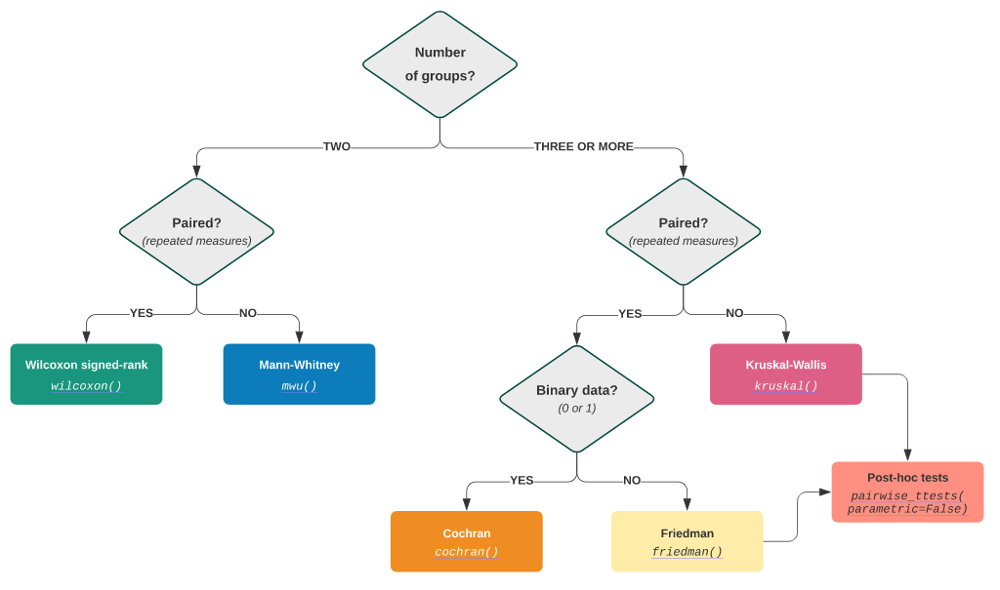

非参数检验#
Show code cell source
from scipy import stats
1. 分类资料处理#
1.1. 数据变换#
1.1.1. 常规变换#
对数变换：\(X' = \ln(X + a)\)
对数高斯分布资料，如抗体滴度，疾病潜伏期等。
标准差与均值成比例，或变异系数接近甚至等于某一常数的资料。
平方根变换：\(X' = \sqrt{X}\)
方差与均值成比例的资料，如服从 Poisson 分布的资料。
角度变换：\(X' = \arcsin{\sqrt{X}}\)
百分比的数据资料。
1.1.2. Box-Cox 幂变换#
Box-Cox 变换可以将非正态分布的独立因变量变换成正态分布，我们知道，很多统计检验方法的一个重要假设就是”正态性”，故当对数据进行 Box-Cox 变换后，这意味着我们可以对我们的数据进行许多种类的统计检验。
Box-Cox 变换的主要特点是引入一个参数，通过数据本身估计该参数进而确定应采取的数据变换形式，Box-Cox 变换可以明显地改善数据的正态性、对称性和方差相等性，对许多实际数据都是行之有效的。
1.2. 一个比例#
若有一个样本组的数据，可检验该样本是否代表标准总体。要做到这一点，必须知道该特征在标准总体中的占比\(p\)。一个特征在大小为\(n\)的总体中的发生率用二项分布来描述，若有二项分布\(B(k，p)\)中的\(n\)个独立样本，其样本均值的方差为
当\(k = 1\)，具有某个特征的样本的标准误差为：
其 95% 的置信区间为
其中，\(t_{n, 0.025}\)为由 t 分布的反生存函数（ISF）在 0.025 时的值。若数据不在这个置信区间内，则不代表总体的数据。
1.3. 频率表#
若数据可被组织成一组类别，且以频率，即每个类别中的样本总数（而非百分比）来表示，则就应使用非参数检验。
由于 \(χ^2\) 分布描述了数据的变异性（与均值的偏差），因此许多检验都参考了这一分布，并因此被称为 \(χ^2\)检验。
当\(n\)是表中的观测总数时，双向表中每个单元格的期望绝对频率\(e_{i}\)是
对单分类数据
You |
Peter |
Hans |
Paul |
Mary |
Joe |
|---|---|---|---|---|---|
10 |
6 |
5 |
4 |
5 |
3 |
2. 独立分类样本#
2.1. \(χ^2\)偶然性检验#
设观测绝对频率\(o_{i}\)和期望绝对频率\(e_{i}\)。在零假设下，所有的数据都来自于同一人群，检验统计量为
现有例子
处理 |
愈合 |
未愈合 |
合计 |
愈合率（%） |
|---|---|---|---|---|
洛赛克 |
64 |
21 |
85 |
75.29 |
雷尼替丁 |
51 |
33 |
84 |
60.71 |
合计 |
115 |
54 |
169 |
68.05 |
对如上资料，计算下式
其中，A 为实际值即（64, 21, 51, 33），T 为理论值即（85 × 75.29, 85 × 24.71, 84 × 60.71, 84 × 39.29）
对于双样本，亦可由下式计算
\(χ^2\)联表分析中，不得有 ⩾ 20% 的格子的理论频数 <5，也不得有 1 个格子的理论频数 <1，对于此类资料，参见 Fisher’s 精确检验。
2.2. Fisher’s 精确检验#
Fisher’s 精确检验在计算上比\(χ^2\)检验更昂贵和复杂，且最初仅用于小样本数。但，现在它是更明智的检验。
一个著名的例子是”女士品茶”（A Lady Tasting Tea）。事情发生在一天下午，Fisher 从瓮中抽出一杯茶，给他身边的女士，藻类学家 Muriel Bristol 博士。她拒绝了，说她更喜欢先倒入牛奶的杯子。”这有什么区别，”Fisher 笑着回道，“当然，这没有什么区别。”。但 Bristol 坚持说，当然有区别。Bristol 的丈夫 William Roach 建议，“我们来测试一下她。”
现在设 Fisher 要检验女士的能力，准备八杯茶，分别先倒四杯茶、先倒四杯牛奶，然后告知她设计。设杯子以随机顺序呈现给她。于是理想情况下，若她能区别倒茶的顺序，则\(b, c\)应该非常小，相反则\(a ≈ c\)。
tea first |
milk first |
total |
|
|---|---|---|---|
tea first |
a |
b |
a + b |
milk first |
c |
d |
c + d |
total |
a + c |
b + d |
n |
一般来说，对于这种设计，无论服务多少杯子（\(n\)），总能得到\(a + b = a + c\)，因为受试者知道有多少杯子是”茶先”。于是只需指定\(a\)，其余 3 者即可被确定。事实证明，若我们设她没有辨别技能，则茶的正确分类数量（\(a\)）具有超几何分布。
于是该例子有
func = stats.hypergeom(8, 4, 4)
p_val = func.pmf(4) # all correct p = 1/70
print(p_val)
p_val = func.pmf(4) + func.pmf(3) # one error, p = 1/70 + 16/70
print(p_val)
0.014285714285714284
0.24285714285714283
3. 配对分类样本#
3.1. McNemar’s 检验#
McNemar’s 检验是\(2×2\)表的匹配对检验，\(χ^2\)检验的变体。例如，若想查看两位医生在检查相同患者时是否获得可比较的结果，将使用此检验。
由于总合计是相同的，则关于 A 和 B 的比较，就转化为行、列合计的比较，又由于起始值相同，于是进一步转化为 A- 和 B- 的比较。即，McNemar 的原设是边缘概率相等，即
在以下示例中，研究人员尝试确定药物是否对特定疾病有影响。
After: present |
After: absent |
Total |
|
|---|---|---|---|
Before: present |
101 |
121 |
222 |
Before: absent |
59 |
33 |
92 |
Total |
160 |
154 |
314 |
由 7.2 的公式，其中\(T = \dfrac{b + c}{2}\)，化简得
在这个例子中，”边际齐次性”的零假设意味着治疗没有效果。
当\(b + c < 40\)时，构造连续校正后的统计量（自由度为 1）
其中，校正因子 = 0.5（Yates 校正）或 1（Edward 校正），此校正也适用于\(χ^2\)检验。
当\(b + c < 25\)时，使用\(χ^2\)检验会出现较大的偏差，此时需要使用二项分布的精确检验。
3.2. Cochran’s Q 检验#
Cochran’s Q 检验是 McNemar’s 检验的扩展，提供了一种检验三个或更多匹配频率或比例之间差异的方法，只使用两种可能的结果（编码为 0 和 1）。
即存在第三个类别变量的情况下有条件地检验两个二进制变量的关联度。
其中
\(P_a = \dfrac{a + d}{n}\)为实际一致的比例
\(P_e = \dfrac{(a + b)(a + c) + (d+ b)(d + c)}{n^2}\)为与期望的比例（懵对的比例）
\(Q ∈ [-1, 1]\)。-1 代表完全不一致（\(a* = *d = 0\) 且 \(b = c\)）；+ 1 代表完全一致\((b = c = 0)\)；0 表示结果纯粹是瞎懵的；负值代表结果比瞎懵还差；正值越接近 1 代表一致性越好。
通常 > 0.75 表示一致性较满意，< 0.4 一致性不好。但，对于测量系统来说，需要在 > 0.9 才能说是好的测量系统。
4. 独立顺序样本#

4.1. Wilcoxon 秩和检验#
将数据按大小顺序排列，每个数据的序号即为秩（rank），其中相等的数据，组成一个节（tie），其秩为顺序得到秩的均值（不一定是整数）。
计算每个观察值与检测值值之间的差。
忽略差的符号，将它们按数量排列。
根据所选设值的下方（或以上）的观察值，计算所有负（或正）秩之和。
4.2. Mann-Whitney U 检验#
即双样本 Wilcoxon 秩和检验。
设含量为\(n_1\)与\(n_2\)的两个样本（且\(n_1 ⩽ n_2\)），来自同一总体或分布相同的两个总体，则\(n_1\)样本的秩和\(U_1\)与其理论秩和 \(n_1(N + 1) / 2\)相差不大。
步骤参Kruskal-Wallis H 检验。
4.2.1. 秩和的分布#
精确分布
近似分布
没有 tie 时
有 tie 时
\(j\)为 tie 的个数
当 \(n_1 ＞10\) 或 \(n_2 - n_1 ＞10\)，可使用正态近似
当 tie 较多时，应对\(Z\)进行校正
4.3. Kruskal-Wallis H 检验#
即多样本 Wilcoxon 秩和检验。
合并样本，对秩进行编排，得到平均秩\(r̄_{i}\)以及下表
\(r̄_{i} = \dfrac{r_\mathrm{start} + r_\mathrm{end}}{2}\)
A |
B |
C |
合计 |
秩范围 |
平均秩 |
|
|---|---|---|---|---|---|---|
无效 |
24 |
20 |
20 |
64 |
1∼64 |
32.5 |
好转 |
26 |
16 |
22 |
64 |
65∼128 |
96.5 |
显效 |
72 |
24 |
14 |
110 |
129∼238 |
183.5 |
治愈 |
186 |
32 |
22 |
240 |
239∼478 |
358.5 |
合计 |
308 |
92 |
78 |
478 |
求各组秩和：各组各秩的频数与平均秩的乘积之和。
根据下式计算统计量\(H\)
其中，\(k\)为组数，\(R_{i}\)为秩和
最后进行校正
\(H_c = \dfrac{H}{c}\)
当每组中的样本数\(n_{i} > 5\)时，\(H\)值近似服从\(χ^2(k-1)\)。
4.4. 扩展的 t 检验#
秩和检验的多重比较
根据下式计算
5. 配对顺序样本#
5.1. Wilcoxon 符号秩检验#
前提条件：\(X\)为一个连续且对称的分布
数据 |
H₀ |
统计量 |
|---|---|---|
单样本中位数 |
ν = a |
|
配对样本 |
ν = 0 |
|
名词性数据 |
p = 0.5 |
5.1.1. 检验统计量#
令
统计量 B 为
+、-的最小个数\(n\)为样本去掉 0 后的总个数
\(n ⩽ 25\)时
\(n > 25\)时
5.1.2. 步骤#
去除 0，得到\(n\)
对\(|X_{i}|\)排序，得到对应的秩\(R_{i}\)
根据\(X_{i}\)的符号，得到符号秩\(R_{i}'\)
构造检验统计量\(T = ∑R_{i}'\)
在 H₀ 条件下，看\(T\)是否为极端值
若此设成立，样本差值的正秩和与负秩和应相差不大，均接近\(\dfrac{n (n + 1)}{4}\)
无 tie 时
有 tie 时
\(t_i\)为第\(i\)个节中相等数据的数目
\(n > 50\)时，可使用正态近似